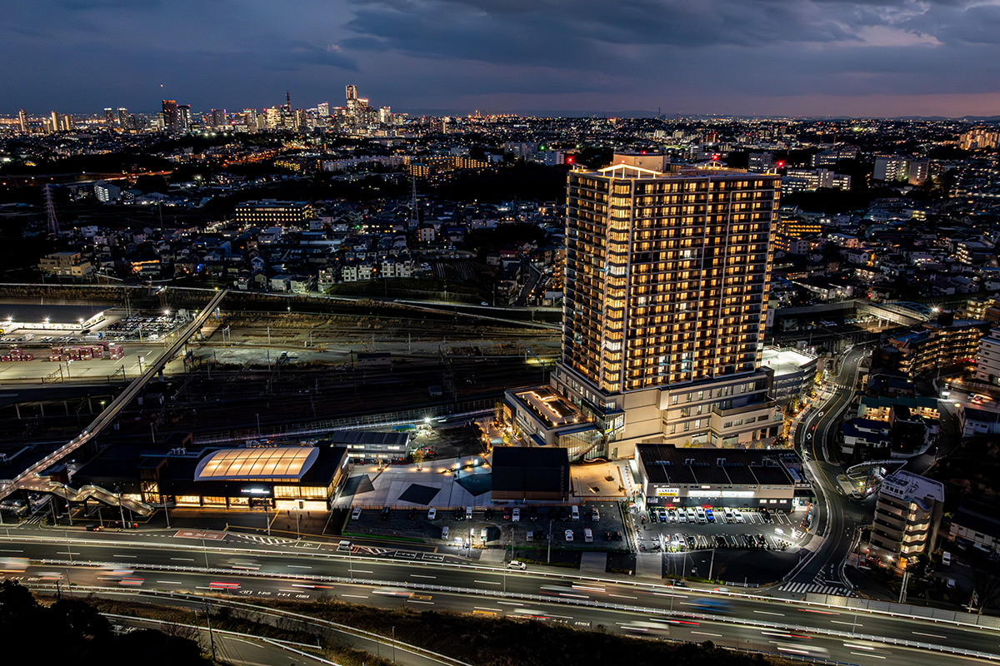
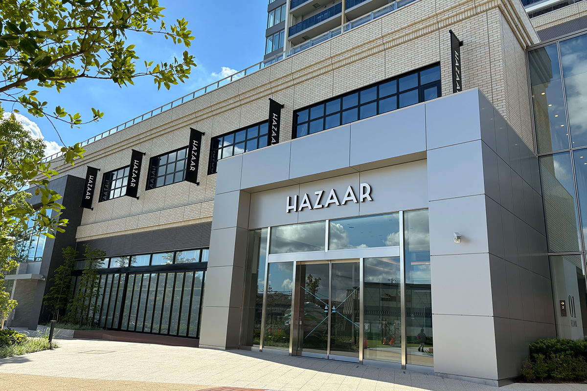
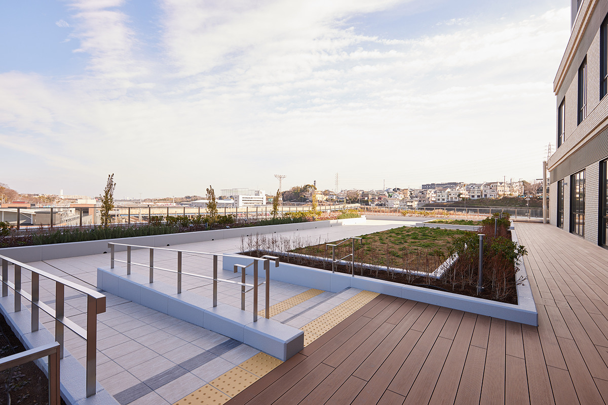

Префектура Канагава · Ёкогама, Хадзава · новый квартал
HAZAAR в Хадзаве: как складской квартал Ёкогамы становится новым городом

Хадзава на северо-западе Ёкогамы долго оставалась краем полей и складов. В октябре 2024 года здесь открылся торговый комплекс HAZAAR, вокруг которого строится новый городской квартал.
Квартал
От складов к Hazawa Valley
Хадзава лежит примерно в 3,5 км к северо-западу от вокзала Ёкогама. Долгое время здесь тянулись поля и склады: с 1960-х годов район был одним из логистических узлов Ёкогамы. Квартал перестраивают под новым именем Hazawa Valley. Его задумали как место, откуда пойдёт новый образ жизни.
Толчком стала станция Хадзава-Ёкогама-Кокудай на линии Сотэцу. Когда её открыли, у земли вокруг станции увидели большие возможности, и для неё задумали новый район. Земля, где стояли склады компании, хранившей здесь грузы, ушла под станцию, а вокруг начали проектировать район, который должен привлечь людей и дать им повод встречаться.
На площади около 16 000 квадратных метров собирают всё, что нужно для жизни: станцию, жилые дома, магазины, клиники и детский сад с государственной лицензией. Привычки работать и жить сильно изменились, и район придумывали с нуля, как место, где хочется жить. Задача проекта в том, чтобы соединить городской ритм, чуткий к переменам, со спокойной жизнью рядом с природой, которой Хадзава отличается от центра.
Комплекс
HAZAAR: сердце нового района

Центром района стал торговый комплекс HAZAAR, открытый 1 октября 2024 года. Он связан в одно целое с пешеходной аллеей привокзальной площади и жилым домом. В четырёх этажах разместились не только магазины, но и детский сад, медицинские кабинеты и площадка, которую ведут вместе с Национальным университетом Ёкогамы, бизнесом и жителями. На 2025 год и дальше планировали открыть супермаркет и другие магазины.

Создатели комплекса хотят, чтобы вокруг него складывалась жизнь квартала: вместе со старожилами Хадзавы и новыми жителями здесь собираются устраивать встречи и поводы гордиться своим районом. Хадзава задумана как место, где сходятся разные люди и идеи, и за тем, как она меняется, интересно следить.
HAZAAR
- Адрес
- префектура Канагава, Ёкогама, район Канагава, Хадзава-минами, 2-44-7
- Часы работы
- 10:00–20:00, часть магазинов работает дольше
- Выходные
- новогодние праздники, дни проверки всего здания (дважды в год)
- Как добраться
- около минуты пешком от станции Хадзава-Ёкогама-Кокудай линии Сотэцу
- Сайт
- hazaar.jp